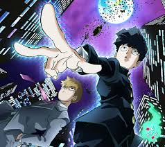

Mob Psycho 100 es una serie de manga escrita e ilustrada por ONE, el mismo creador de One Punch Man.
Publicado originalmente entre 2012 y 2017, el manga fue adaptado a un exitoso anime por el estudio Bones, que debutó en 2016.
La historia sigue a Shigeo Kageyama, un tímido estudiante de secundaria apodado "Mob", quien posee habilidades psíquicas extraordinarias.
A pesar de su enorme poder, Mob intenta llevar una vida normal, reprimiendo sus emociones para evitar perder el control de sus habilidades, lo que podría tener consecuencias catastróficas.
La trama combina acción, comedia y profundas reflexiones sobre la identidad, las emociones humanas y el deseo de conexión personal. Mob trabaja como asistente de Reigen Arataka, un autoproclamado "psíquico experto" y estafador, quien actúa como mentor y figura cómica en su vida. A medida que Mob enfrenta enemigos sobrenaturales y sus propios conflictos internos, la serie explora temas como el autodescubrimiento, la autoestima y el valor de las relaciones humanas.
Con un estilo visual único y una animación dinámica, Mob Psycho 100 ha ganado reconocimiento por su mezcla de humor, emotividad y espectaculares secuencias de acción, consolidándose como una de las obras más queridas del anime contemporáneo.

La obra se desarrolla en un mundo donde existen fenómenos paranormales, espíritus y poderes psíquicos. Estos elementos se integran con la vida cotidiana de manera sorprendente, creando un contraste entre lo extraordinario y lo mundano. Las personas con habilidades psíquicas tienen la capacidad de interactuar con estos fenómenos sobrenaturales, enfrentándose a desafíos que van desde exorcismos hasta conflictos con poderosos grupos de individuos psíquicos.
Uno de los temas centrales de la serie es la exploración del poder y sus implicaciones. La historia cuestiona qué define a una persona verdaderamente fuerte: ¿es el poder físico o psíquico, o son las cualidades humanas como la empatía, el esfuerzo y la autocomprensión? Este enfoque lleva a reflexionar sobre el significado de la verdadera fortaleza y cómo las capacidades sobrenaturales pueden afectar la vida y las relaciones.
Otro aspecto destacado es su estilo visual único. Aunque el diseño original del manga es sencillo, la adaptación al anime destaca por su creatividad y animación fluida. Las escenas de combate y los eventos sobrenaturales están acompañados de una explosión de colores, formas abstractas y movimientos impresionantes, lo que añade intensidad y dramatismo a la narrativa.
La serie también tiene un fuerte componente filosófico, abordando cuestiones como el equilibrio entre las emociones humanas y el autocontrol, la importancia de aceptar las propias debilidades y el valor de las conexiones humanas en un mundo lleno de desafíos. Estos temas convierten a Mob Psycho 100 en una historia tanto entretenida como reflexiva.
Mob Psycho 100 es una popular serie de anime basada en el manga homónimo de ONE, el creador de One Punch Man. La serie sigue a Shigeo Kageyama (apodado Mob), un adolescente con habilidades psíquicas extraordinarias. A pesar de su inmenso poder, Mob es un joven tímido que lucha por llevar una vida normal y busca su propósito personal.
su falta de confianza en sí mismo y su deseo de no depender de sus poderes lo convierten en alguien reservado y humilde. A medida que enfrenta amenazas paranormales y sociales, Mob busca crecer como persona y lograr sus metas, como mejorar su forma física para impresionar a su crush, Tsubomi.
La trama explora temas como:
El equilibrio entre el poder y las emociones.
La importancia del autodescubrimiento y el desarrollo personal.
La lucha contra el ego y el abuso de poder.
Temas Profundos:
El poder no define el valor personal: Mob, a pesar de su inmenso poder, no lo ve como una virtud, sino como una carga que teme descontrolar. Prefiere ser valorado por sus cualidades humanas.
El autodescubrimiento: La serie destaca la importancia de aceptarse a uno mismo y trabajar en las propias debilidades.
El control emocional: La explosión de poder de Mob está ligada a su control emocional; cuando las emociones lo abruman, libera una fuerza destructiva.
Personajes
Shigeo "Mob" Kageyama:
Mob es el protagonista de Mob Psycho 100, un adolescente tímido y emocionalmente reprimido con poderes psíquicos abrumadores. A pesar de su inmenso poder, Mob desea llevar una vida normal y busca no depender de sus habilidades, ya que teme perder el control y lastimar a quienes lo rodean. Es alguien inseguro y socialmente torpe, pero también profundamente amable y genuino. Está enamorado de su compañera Tsubomi, aunque tiene dificultades para expresar sus sentimientos. A lo largo de la serie, Mob se enfrenta a situaciones que lo obligan a crecer como persona, aprender a aceptar sus emociones y entender que su valor no depende de sus poderes. Sus explosiones psíquicas, que ocurren cuando reprime demasiado sus sentimientos, son momentos clave en los que libera toda su energía acumulada, mostrando el alcance de su fuerza, pero también el peligro de ignorar sus propias emociones.
Arataka Rei gen:
Reigen es el mentor y jefe de Mob, un hombre carismático y astuto que trabaja como "psíquico" a pesar de no tener poderes reales. Es un estafador que utiliza trucos simples y su habilidad para manipular a las personas para ganarse la vida. Sin embargo, a pesar de sus engaños, Reigen se preocupa profundamente por Mob y lo ve como más que solo una herramienta para su negocio. Actúa como una figura paterna para Mob, ayudándolo a comprender su valor como persona y enseñándole a no depender exclusivamente de sus poderes. Reigen también tiene momentos heroicos, utilizando su inteligencia y habilidad para hablar incluso en situaciones peligrosas, como enfrentarse a Claw o ayudar a Mob a superar su lado oscuro. A pesar de sus defectos, Reigen es uno de los personajes más queridos de la serie debido a su sentido del humor, lealtad y humanidad.
Ritsu Kageyama:
Ritsu es el hermano menor de Mob, inteligente, carismático y aparentemente perfecto en todo lo que hace, aunque en realidad vive a la sombra de Mob. Durante años, Ritsu sintió celos de los poderes psíquicos de su hermano, deseando tener habilidades similares. Sin embargo, al despertar sus propios poderes, Ritsu comienza a experimentar una crisis moral, dejando que su ambición y el deseo de probarse a sí mismo lo lleven por un camino oscuro. Este conflicto lo aleja de Mob, pero eventualmente se reconcilian cuando Ritsu se da cuenta de que su hermano nunca quiso ser especial y que sus poderes son más una carga que una ventaja. Ritsu es un personaje más estratégico y reflexivo que Mob, y aunque carece de la fuerza bruta de su hermano, demuestra ser valiente y decidido cuando la situación lo exige.
Dimple:
Hoyuelo es un espíritu maligno que originalmente intentaba convertirse en una deidad adorada por las masas, pero fue derrotado por Mob al principio de la serie. En lugar de desaparecer, Hoyuelo decide quedarse cerca de Mob, con la intención de aprovechar su poder psíquico para cumplir sus ambiciones. Sin embargo, a medida que avanza la historia, Hoyuelo comienza a desarrollar un vínculo genuino con Mob y sus amigos, pasando de ser un villano manipulador a un aliado confiable. Aunque sigue siendo sarcástico y oportunista, demuestra tener un lado noble, sacrificándose en la tercera temporada para proteger a Mob del Árbol Divino y el culto que lo rodea. Su transformación lo convierte en uno de los personajes más complejos de la serie.
teruki hanazawa:
Teruki es otro joven psíquico que inicialmente actúa como un antagonista. Al principio de la serie, Teru es arrogante y egocéntrico, creyendo que sus poderes lo hacen superior a los demás. Esta actitud lo lleva a enfrentarse a Mob en una batalla épica que termina con Teru completamente humillado cuando Mob lo derrota sin esfuerzo. Después de este encuentro, Teru cambia drásticamente, adoptando una actitud más humilde y respetuosa hacia los demás. Se convierte en un aliado de Mob y, a lo largo de la serie, demuestra ser un amigo leal y una figura de apoyo importante. Teru tiene una personalidad extrovertida y confiada, pero también entiende la responsabilidad que conlleva ser un psíquico, ayudando a Mob a lidiar con los conflictos sobrenaturales que enfrentan.
Otros psíquicos y antagonistas, como miembros de Claw, una organización que busca dominar el mundo utilizando habilidades psíquicas, representando el abuso y la ambición desmedida.
Estilo Visual
Mob Psycho 100 destaca por su animación única y experimental, con un estilo visual poco convencional que enfatiza las emociones y las batallas psíquicas.
La serie utiliza efectos surrealistas y colores vibrantes para representar el estado emocional de los personajes y las explosiones de energía.
Aqui un ejemplo de la buena calidad de animación en una de las mejores batallas de la temporada 3:
La historia se centra en el crecimiento emocional de Mob, quien aprende a manejar sus poderes, superar sus inseguridades y valorar las relaciones humanas.
Cada arco combina momentos cómicos, emocionales y espectaculares batallas psíquicas.
Primer Arco: Mob enfrenta pequeños trabajos paranormales con Reigen, mientras intenta mantener una vida normal en la escuela.
Segundo Arco: Se profundiza en la relación con su hermano Ritsu, quien descubre sus propios poderes. Esto lleva a un enfrentamiento emocional entre ellos.
Tercer Arco (Claw): Mob se enfrenta a Claw, una organización que abusa de las habilidades psíquicas para conquistar el mundo. Este arco resalta el contraste entre el uso responsable e irresponsable del poder.
Crecimiento Personal: Cada arco impulsa a Mob a desarrollar su carácter, aceptarse como es y valorar las conexiones humanas.
Humor y Filosofía
El anime equilibra su narrativa con un humor característico, en gran parte gracias a la interacción entre Mob y Reigen.
También plantea reflexiones profundas sobre la humanidad, la humildad y el poder.
Gran parte del humor proviene de las interacciones entre Mob y Reigen. Por ejemplo, Reigen finge ser un gran psíquico, pero en realidad usa trucos básicos y excusas ingeniosas.
Situaciones absurdas y los diálogos rápidos mantienen un tono ligero incluso en momentos tensos.
Mob simboliza la idea de que las emociones humanas y el carácter son más importantes que el poder bruto.
La serie reflexiona sobre la humildad, el crecimiento personal y la importancia de las relaciones auténticas en un mundo competitivo.
Si hablamos de la música, es vibrante y emocional, complementando las escenas de acción y los momentos introspectivos ademas de
destacar el tema de apertura "99" de Mob Choir, que se ha vuelto emblemático, los soundtracks de batalla son intensamente
vibrantes quedando muy bien con la serie
acontinuación te presentamos una música que acompaña una de las mas grandes batallas(mob vs toichiro) es una composición intensa y épica que combina elementos electrónicos y orquestales.
Mob Psycho 100 ha sido aclamado por su animación, narrativa y profundidad emocional. Muchos consideran que supera las expectativas de un "shonen típico" ademas ha ganado premios y es elogiada por su enfoque en el desarrollo de personajes y su filosofía única.
Primera Temporada
Openning de Primera temporada
Shigeo Kageyama, apodado Mob, es un adolescente con poderes psíquicos abrumadores, pero que lleva una vida simple y reprimida, intentando mantenerse lejos de conflictos emocionales para no perder el control de sus poderes. Trabaja como asistente de Arataka Reigen, un supuesto psíquico que en realidad es un estafador, aunque se preocupa genuinamente por Mob.
A lo largo de la temporada, Mob enfrenta diversos espíritus malignos, incluido Dimple, un espíritu que buscaba convertirse en un dios pero que Mob derrota con facilidad. En lugar de destruirlo por completo, Mob lo deja vivir, y Dimple termina siguiéndolo como un aliado cómico y manipulador.
En la escuela, Mob intenta acercarse a Tsubomi, su amor de la infancia, pero su torpeza social lo mantiene distante. Paralelamente, se une al "Club de Mejora del Cuerpo", un grupo de chicos musculosos que lo inspiran a superar sus debilidades físicas y mejorar como persona.
Las cosas se complican cuando Ritsu, su hermano menor, comienza a desarrollar poderes psíquicos propios. Durante años, Ritsu había sentido celos de Mob, creyendo que sus poderes lo hacían especial, pero al obtener los suyos, comienza a perderse en su ambición. Esto lo lleva a involucrarse con delincuentes y otros psíquicos hasta que es capturado por Claw, una organización criminal que utiliza psíquicos para sus planes de dominación.
La temporada concluye con Mob enfrentando a Claw para rescatar a su hermano. En el proceso, Mob demuestra que, aunque es capaz de desatar una fuerza abrumadora, se rehúsa a usarla para herir a otros. Su enfrentamiento final con uno de los líderes de Claw pone de manifiesto su filosofía de que el poder debe usarse de manera responsable, consolidando su crecimiento como persona.
Segunda Temporada
Openning de segunda temporada
Mob empieza a ganar confianza y a descubrirse como individuo. Acepta trabajos paranormales más peligrosos junto a Reigen, lo que lo lleva a enfrentarse a desafíos tanto sobrenaturales como emocionales. En un momento clave, Mob se enfrenta al espíritu maligno Mogami Keiji, quien lo atrapa en un mundo ilusorio donde Mob experimenta la vida como una persona común y sin poderes. Esto lo hace reflexionar sobre su identidad y reforzar su compromiso de usar sus habilidades para el bien.
La relación entre Mob y Reigen atraviesa una prueba importante cuando Mob empieza a cuestionar la dependencia que tiene de su mentor. Reigen, a pesar de sus defectos y engaños, demuestra que realmente se preocupa por Mob, y su reconciliación fortalece su vínculo.
En paralelo, el mundo se vuelve más peligroso con la reaparición de Claw, ahora liderada por Toichiro Suzuki, un psíquico extremadamente poderoso que cree que el poder es la única forma de controlar el mundo. Toichiro lleva a cabo un ataque masivo con su organización, desatando el caos y enfrentándose directamente a Mob y sus aliados.
El enfrentamiento entre Mob y Toichiro es el punto culminante de la temporada. Toichiro, arrogante y consumido por su poder, subestima a Mob, quien demuestra una fuerza abrumadora pero se niega a dejarse llevar por la destrucción. En lugar de simplemente derrotarlo, Mob busca ayudar a Toichiro a entender los peligros de su ideología. La batalla termina con Toichiro reconociendo sus errores y siendo salvado por Mob, quien nuevamente demuestra que su verdadero poder radica en su humanidad.
Tercera Temporada
Openning de tercera temporada
Mob se centra en su crecimiento personal mientras enfrenta los desafíos de la vida cotidiana. Aunque sigue realizando trabajos paranormales con Reigen, comienza a pensar en su futuro y en lo que quiere para su vida. Su relación con Tsubomi se convierte en un foco importante, ya que finalmente decide confesarle sus sentimientos.
Al mismo tiempo, Mob enfrenta amenazas paranormales más grandes, incluyendo un gigantesco brócoli psíquico conocido como el "Árbol Divino", que surge como consecuencia de los eventos de la temporada anterior. Este árbol se convierte en el centro de un culto liderado por Dimple, quien ve una oportunidad para cumplir sus viejas ambiciones. Sin embargo, Dimple muestra un lado más noble al sacrificar su propio bienestar para proteger a Mob y al mundo, reforzando su lealtad al joven psíquico.
El clímax emocional de la temporada ocurre cuando Mob es rechazado por Tsubomi, un golpe devastador que desata sus emociones reprimidas y lo lleva a perder el control de sus poderes. En este estado, Mob se convierte en una fuerza incontrolable, arrasando todo a su paso. Sus amigos, incluido Reigen, intentan detenerlo, pero no pueden hacerlo con fuerza física o psíquica.
Finalmente, es Reigen quien logra llegar a Mob. En un momento profundamente emotivo, Reigen confiesa que siempre ha sido un farsante y que su única verdadera cualidad ha sido creer en Mob. Este acto de honestidad y amor genuino ayuda a Mob a calmarse y aceptar la parte de sí mismo que siempre había temido: sus emociones y poderes descontrolados.
La serie concluye con Mob encontrando un equilibrio entre sus emociones y habilidades, habiendo crecido significativamente como persona. Decide seguir adelante con su vida, dejando atrás sus inseguridades y mirando hacia el futuro con optimismo y madurez.
En esta sección describimos a los antagonistas principales de *Mob Psycho 100*
Toichiro Suzuki
Toichiro es el líder supremo de Claw, la organización criminal de psíquicos, y el principal antagonista de la segunda temporada. Es un hombre frío y calculador que cree firmemente que el poder define el valor de una persona. Tiene una visión egoísta y despectiva de los demás, considerándolos inferiores y útiles solo como herramientas para sus propios objetivos. Toichiro tiene habilidades psíquicas colosales, siendo capaz de acumular energía dentro de su cuerpo y desatarla en explosiones devastadoras. Su ambición lo lleva a intentar conquistar el mundo, pero su arrogancia y aislamiento emocional lo convierten en una figura trágica. Su enfrentamiento con Mob lo obliga a confrontar su soledad y la carga de su inmenso poder, llevándolo finalmente a reconocer sus errores cuando Mob lo salva de autodestruirse.
Toichiro vs Mob
Keiji Mogami
Mogami es un espíritu maligno extremadamente poderoso y uno de los enemigos más impactantes de la serie. En vida, fue un psíquico talentoso que perdió toda esperanza en la humanidad tras una serie de tragedias personales, incluyendo el sufrimiento y la muerte de su madre. Esto lo llevó a despreciar a los demás, convencido de que las personas solo se preocupan por sí mismas. Tras su muerte, Mogami se convirtió en un espíritu vengativo que se alimenta del sufrimiento de los vivos. En su enfrentamiento con Mob, Mogami lo atrapa en un mundo ilusorio donde Mob vive una vida miserable y sin poderes, con la intención de quebrar su espíritu. Sin embargo, Mob supera esta prueba, reafirmando su fe en las personas y derrotando a Mogami, quien se convierte en una representación del camino oscuro que Mob podría seguir si perdiera su humanidad.
Mogami vs Mob
Ryo Shimazaki
Ryo Shimazaki es uno de los miembros más peligrosos y excéntricos de la División Superior de Claw, conocida como los "Scars". Es un psíquico especializado en la teletransportación, lo que lo convierte en un oponente extremadamente difícil de predecir y derrotar en combate. Shimazaki es arrogante y disfruta humillar a sus enemigos, confiado en que nadie puede igualar su velocidad y precisión. Durante la batalla contra los miembros del Escuadrón de Mejora Psíquica y otros aliados de Mob, Shimazaki muestra un nivel de poder abrumador, casi invencible, pero su excesiva confianza lo lleva a subestimar a sus oponentes, lo que eventualmente lo deja vulnerable. A pesar de su fuerza, su personalidad caótica y egocéntrica lo aísla de sus propios aliados.
Shimazaki vs TODOS
Líder de la Séptima División (Ishiguro)
Ishiguro es el líder de la Séptima División de Claw, uno de los primeros grupos de antagonistas significativos de la serie. Es un hombre que oculta su rostro detrás de una máscara y proyecta una imagen de autoridad y misterio. Ishiguro lidera un grupo de psíquicos que se dedican a capturar a individuos con habilidades especiales para usarlos como armas de Claw. A pesar de su actitud intimidante, Ishiguro demuestra ser cobarde y manipulador, confiando en sus subordinados para realizar la mayor parte del trabajo sucio. Durante su enfrentamiento con Mob, Ishiguro muestra una falta de verdadera fortaleza y liderazgo, siendo derrotado fácilmente. Su desenmascaramiento revela que no es más que un hombre débil que se escondía detrás de una fachada de poder.
Ishiguro vs Reigen
Psico Casco (Psycho Helmet)
El Psico Casco es una entidad que surge en torno al Árbol Divino, una planta gigante con propiedades psíquicas que creció a partir de una semilla influenciada por el poder de Mob. En la tercera temporada, esta entidad se convierte en el centro de un culto que idolatra a Mob como una figura divina. Aunque al principio el Psico Casco no tiene una forma concreta, Dimple, el espíritu aliado de Mob, intenta aprovechar la situación para hacerse pasar por él y tomar el control del culto. Sin embargo, la situación se descontrola cuando el Psico Casco adquiere una conciencia propia y comienza a amenazar la ciudad. Este conflicto fuerza a Dimple a enfrentarse al Psico Casco y sacrificar su propio bienestar para proteger a Mob y resolver el problema.

.jpeg) Reigen es el mentor y jefe de Mob, un hombre carismático y astuto que trabaja como "psíquico" a pesar de no tener poderes reales. Es un estafador que utiliza trucos simples y su habilidad para manipular a las personas para ganarse la vida. Sin embargo, a pesar de sus engaños, Reigen se preocupa profundamente por Mob y lo ve como más que solo una herramienta para su negocio. Actúa como una figura paterna para Mob, ayudándolo a comprender su valor como persona y enseñándole a no depender exclusivamente de sus poderes. Reigen también tiene momentos heroicos, utilizando su inteligencia y habilidad para hablar incluso en situaciones peligrosas, como enfrentarse a Claw o ayudar a Mob a superar su lado oscuro. A pesar de sus defectos, Reigen es uno de los personajes más queridos de la serie debido a su sentido del humor, lealtad y humanidad.
Ritsu Kageyama:
Ritsu es el hermano menor de Mob, inteligente, carismático y aparentemente perfecto en todo lo que hace, aunque en realidad vive a la sombra de Mob. Durante años, Ritsu sintió celos de los poderes psíquicos de su hermano, deseando tener habilidades similares. Sin embargo, al despertar sus propios poderes, Ritsu comienza a experimentar una crisis moral, dejando que su ambición y el deseo de probarse a sí mismo lo lleven por un camino oscuro. Este conflicto lo aleja de Mob, pero eventualmente se reconcilian cuando Ritsu se da cuenta de que su hermano nunca quiso ser especial y que sus poderes son más una carga que una ventaja. Ritsu es un personaje más estratégico y reflexivo que Mob, y aunque carece de la fuerza bruta de su hermano, demuestra ser valiente y decidido cuando la situación lo exige.
Dimple:
Hoyuelo es un espíritu maligno que originalmente intentaba convertirse en una deidad adorada por las masas, pero fue derrotado por Mob al principio de la serie. En lugar de desaparecer, Hoyuelo decide quedarse cerca de Mob, con la intención de aprovechar su poder psíquico para cumplir sus ambiciones. Sin embargo, a medida que avanza la historia, Hoyuelo comienza a desarrollar un vínculo genuino con Mob y sus amigos, pasando de ser un villano manipulador a un aliado confiable. Aunque sigue siendo sarcástico y oportunista, demuestra tener un lado noble, sacrificándose en la tercera temporada para proteger a Mob del Árbol Divino y el culto que lo rodea. Su transformación lo convierte en uno de los personajes más complejos de la serie.
teruki hanazawa:
Teruki es otro joven psíquico que inicialmente actúa como un antagonista. Al principio de la serie, Teru es arrogante y egocéntrico, creyendo que sus poderes lo hacen superior a los demás. Esta actitud lo lleva a enfrentarse a Mob en una batalla épica que termina con Teru completamente humillado cuando Mob lo derrota sin esfuerzo. Después de este encuentro, Teru cambia drásticamente, adoptando una actitud más humilde y respetuosa hacia los demás. Se convierte en un aliado de Mob y, a lo largo de la serie, demuestra ser un amigo leal y una figura de apoyo importante. Teru tiene una personalidad extrovertida y confiada, pero también entiende la responsabilidad que conlleva ser un psíquico, ayudando a Mob a lidiar con los conflictos sobrenaturales que enfrentan.
Otros psíquicos y antagonistas, como miembros de Claw, una organización que busca dominar el mundo utilizando habilidades psíquicas, representando el abuso y la ambición desmedida.
Estilo Visual
Mob Psycho 100 destaca por su animación única y experimental, con un estilo visual poco convencional que enfatiza las emociones y las batallas psíquicas.
La serie utiliza efectos surrealistas y colores vibrantes para representar el estado emocional de los personajes y las explosiones de energía.
Reigen es el mentor y jefe de Mob, un hombre carismático y astuto que trabaja como "psíquico" a pesar de no tener poderes reales. Es un estafador que utiliza trucos simples y su habilidad para manipular a las personas para ganarse la vida. Sin embargo, a pesar de sus engaños, Reigen se preocupa profundamente por Mob y lo ve como más que solo una herramienta para su negocio. Actúa como una figura paterna para Mob, ayudándolo a comprender su valor como persona y enseñándole a no depender exclusivamente de sus poderes. Reigen también tiene momentos heroicos, utilizando su inteligencia y habilidad para hablar incluso en situaciones peligrosas, como enfrentarse a Claw o ayudar a Mob a superar su lado oscuro. A pesar de sus defectos, Reigen es uno de los personajes más queridos de la serie debido a su sentido del humor, lealtad y humanidad.
Ritsu Kageyama:
Ritsu es el hermano menor de Mob, inteligente, carismático y aparentemente perfecto en todo lo que hace, aunque en realidad vive a la sombra de Mob. Durante años, Ritsu sintió celos de los poderes psíquicos de su hermano, deseando tener habilidades similares. Sin embargo, al despertar sus propios poderes, Ritsu comienza a experimentar una crisis moral, dejando que su ambición y el deseo de probarse a sí mismo lo lleven por un camino oscuro. Este conflicto lo aleja de Mob, pero eventualmente se reconcilian cuando Ritsu se da cuenta de que su hermano nunca quiso ser especial y que sus poderes son más una carga que una ventaja. Ritsu es un personaje más estratégico y reflexivo que Mob, y aunque carece de la fuerza bruta de su hermano, demuestra ser valiente y decidido cuando la situación lo exige.
Dimple:
Hoyuelo es un espíritu maligno que originalmente intentaba convertirse en una deidad adorada por las masas, pero fue derrotado por Mob al principio de la serie. En lugar de desaparecer, Hoyuelo decide quedarse cerca de Mob, con la intención de aprovechar su poder psíquico para cumplir sus ambiciones. Sin embargo, a medida que avanza la historia, Hoyuelo comienza a desarrollar un vínculo genuino con Mob y sus amigos, pasando de ser un villano manipulador a un aliado confiable. Aunque sigue siendo sarcástico y oportunista, demuestra tener un lado noble, sacrificándose en la tercera temporada para proteger a Mob del Árbol Divino y el culto que lo rodea. Su transformación lo convierte en uno de los personajes más complejos de la serie.
teruki hanazawa:
Teruki es otro joven psíquico que inicialmente actúa como un antagonista. Al principio de la serie, Teru es arrogante y egocéntrico, creyendo que sus poderes lo hacen superior a los demás. Esta actitud lo lleva a enfrentarse a Mob en una batalla épica que termina con Teru completamente humillado cuando Mob lo derrota sin esfuerzo. Después de este encuentro, Teru cambia drásticamente, adoptando una actitud más humilde y respetuosa hacia los demás. Se convierte en un aliado de Mob y, a lo largo de la serie, demuestra ser un amigo leal y una figura de apoyo importante. Teru tiene una personalidad extrovertida y confiada, pero también entiende la responsabilidad que conlleva ser un psíquico, ayudando a Mob a lidiar con los conflictos sobrenaturales que enfrentan.
Otros psíquicos y antagonistas, como miembros de Claw, una organización que busca dominar el mundo utilizando habilidades psíquicas, representando el abuso y la ambición desmedida.
Estilo Visual
Mob Psycho 100 destaca por su animación única y experimental, con un estilo visual poco convencional que enfatiza las emociones y las batallas psíquicas.
La serie utiliza efectos surrealistas y colores vibrantes para representar el estado emocional de los personajes y las explosiones de energía.